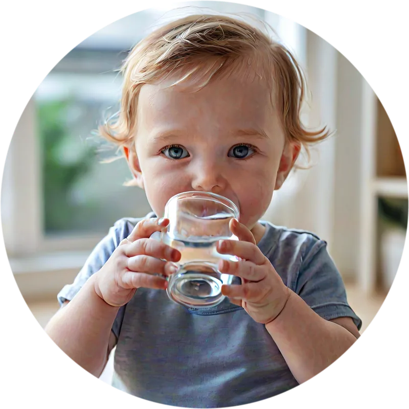
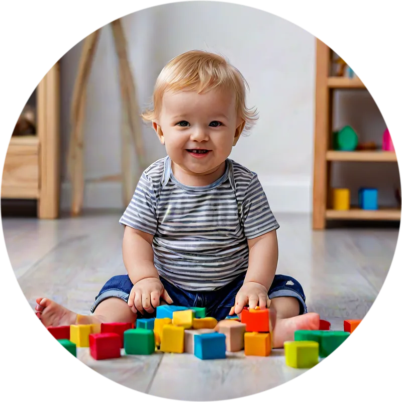

آكُل
كِتَابِي الْأَوَّل
أَفْعَالِي
صِغَارُ الضَّاد
30-actions · page 1 · front cover
آكُل
30-actions · page 2 · item 01
أَشْرَب

30-actions · page 3 · item 02
أَنَام
30-actions · page 4 · item 03
أَلْعَب

30-actions · page 5 · item 04
أَقْرَأ
30-actions · page 6 · item 05
أَرْكُض
30-actions · page 7 · item 06
أَرْسُم
30-actions · page 8 · item 07
أَغْسِل
30-actions · page 9 · item 08
أَسْبَح
30-actions · page 10 · item 09
أَضْحَك
30-actions · page 11 · item 10
مَنْ يَنَامُ؟
30-actions · page 12 · question 1
مَنْ يَأْكُلُ؟
30-actions · page 13 · question 2
مَنْ يَرْكُضُ؟
30-actions · page 14 · question 3
كُلُّهَا مَعًا!
أَشْرَب
أَنَام
أَلْعَب
أَقْرَأ
أَرْكُض
أَرْسُم
أَغْسِل
أَسْبَح
أَضْحَك
30-actions · page 15 · all together
صِغَارُ الضَّاد
يتعلّم طفلك أفعالًا يقوم بها كل يوم مع صور أطفال مثله.
من عمر سنة إلى ٣ سنوات
ISBN / BARCODEprinter places it here
30-actions · page 16 · back cover